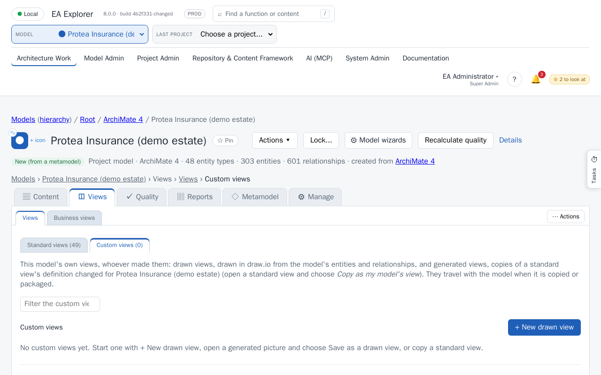

Draw a view
For: Practising architects
A view drawn in the built-in draw.io with the model's own entities, kept in step with the model.

#/metamodel/{m}/views/customWhy do this
Some audiences need a picture arranged for them: a context diagram for a board, a landscape for a workshop. A drawn view gives you draw.io's freedom while each shape stays bound to the model, so the picture never drifts from the truth. See Views, reports and KPIs.
Views and reports are where the model meets its audience. Choose the one that answers the question in front of you, for the person in front of you, and it stays current as the model changes.
In TOGAF terms: Architecture views and viewpoints: artifacts that address stakeholders' concerns, in any ADM phase. See EA Explorer and the TOGAF Standard.
The goal: A diagram laid out by hand, every shape a real entity.
Before you start You need a role on the model; drawing relationships into the model needs Architect or higher.
Steps
- Open the model, its Views tab. Start a new drawn view (name it; it opens in its own tab), or open any picture (a network, a capability map, a standard view) and Save as a drawn view.
- Drag entities in from the search panel; the shapes use the ArchiMate 4 notation. A shape can be a placeholder until the entity exists.
- Lines you draw between entities go into the model as your change, only the relationship types the metamodel allows. Deleting a line asks: hide it in the view, or delete it from the model.
- Notes, comments and arrows from draw.io's general shapes never touch the model.
- Save: each save is kept as a version. Export as PNG, SVG, PDF or .drawio.